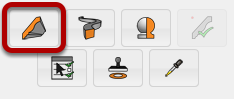
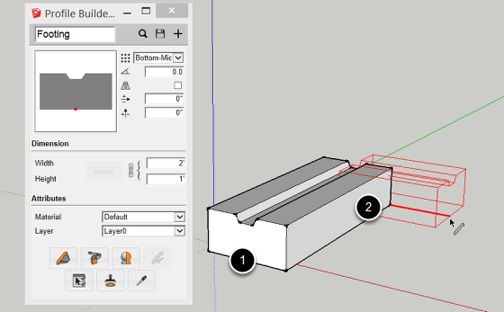
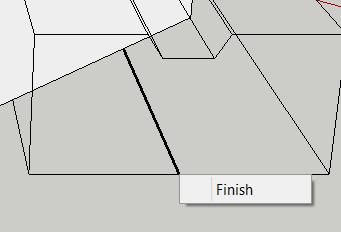
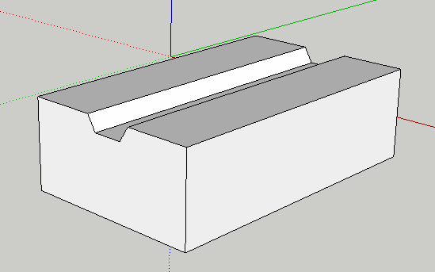

Open the Profile Builder Dialog.
Then, click the Build Tool.

1. Click a point in the model to define the start point of the member.
2. Continue clicking points to define the path of the member.

Complete the member by:
1. Pressing ESC, ENTER, or RETURN
OR
2. Right-click and choose 'Finish' (shown above)
OR
3. Creating a closed path for the member.

Arrows Keys = Lock Axis
SHIFT = Lock Inference
CTRL / OPTION = Profile Member path Inferecing (PMPI)
HOME = Cycle Placement point
END = Cycle Rotation in 45 degree increments
BACKSPACE = Undo the last path point
You can also enter values in the Measurements box to draw precisely